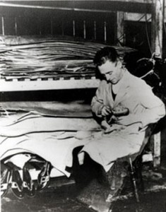
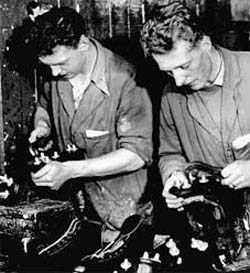
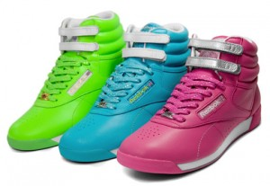
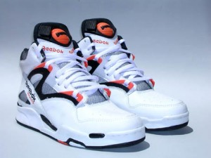
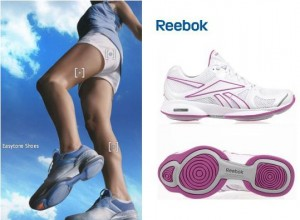

Історія бренду REEBOK
Історія легендарного бренду Reebok бере свій початок у 1895 році.
Зародження легенди.
Виникненню одного з найстаріших брендів сприяло звичайне людське бажання мати зручне взуття для бігу. Саме її так не вистачало жителю маленького англійського села Джозефу Фостеру.

Наприкінці позаминулого століття Джозеф вступив до клубу шанувальників бігу. Взуття, яке дозволяло із зручністю займатися улюбленою справою, тоді не було. Навіть професійним бігунам важко вдавалося дістати відповідне взуття для занять спортом.
Саме тому Джозеф, який має професію взуттьовика, сам зробив собі зручні черевики для улюбленого хобі. Для найкращого зчеплення із ґрунтовою поверхнею, він прикріпив до підошви кілька невеликих гвоздиків. З цих бігових туфель і розпочалася історія всесвітньо відомого спортивного бренду.
На початку ХХ століття, Джозеф Фостер налагоджує виробництво шипованого взуття для бігу і дає своєму підприємству назву «J. 'W. Foster & Co». Взуття робилося на замовлення за мірками, знятими з ноги спортсмена. Спортивні туфлі миттєво стали популярними у біговому клубі, де складався Фостер. Спортсмени-аматори вдягали шиповані туфлі на всі змагання.
1906 року, у зв'язку з народженням синів, Фостер перейменував свою компанію на «Д. У. Фостер та сини» (J.W. Foster & Sons).
У 1909 році, Фостер вигадав нововведення, які допомогли йому зробити фірму унікальною в Англії:
Він вигадав своєрідну розмірну шкалу. Тепер спортсмену, котрий побажав взуття від Фостера, не потрібно було особисто приходити на примірки. Достатньо було надіслати майстру аркуш паперу, на якому було окреслено контур ступні та вказано всі необхідні виміри;
Джозеф Фостер створив колекції взуття для різних видів бігу. Наприклад, для спортсменів, які займаються бігом із перешкодами — компанія пропонувала черевики із шипованими п'ятами. Взуття з ремінцями, що підтримують гомілковостоп, було призначене для бігу по пересіченій місцевості. Також були колекції спортивних черевиків для занять у приміщенні, для бігу на середні дистанції тощо.
У 1924 році, у спортивному взутті від «Д. У. Фостер та сини», на Олімпіаді у Франції, змагаються відомі бігуни К. Модел і К. Абрахам. Після змагань спортсмени зізналися, що саме це взуття дозволило їм бігти швидше. Після цього випадку, компанія Фостера стала популярною у спортсменів.
Вже на початку 1930-х років, фірма «Д. У. Фостер і сини» була визнана однією з найкращих у Великій Британії. Тепер, крім взуття для бігу, фабрика Джозефа Фостера «Олімпійські майстерні» виготовляла черевики для регбістів, хокеїстів, боксерів, футболістів та велосипедистів.
1933 року Джозефа Фостера не стало. Справу продовжили його сини, які розширили компанію та зміцнили її провідні позиції у Великій Британії.
Проте найноваторські ідеї та завоювання світового ринку спортивних товарів належать онукам Фостера – Джозефу молодшому та Джефрі.
"Африканська антилопа".

У 1958 році компанія була перейменована на Mercury Sports Footwear, у зв'язку з випуском нової моделі спортивного взуття Mercury. Але у 1960 році компанія знову змінює назву. Тепер вона називається Reebok. Цю назву Джозеф та Джефрі Фостер виявили у словнику, а означало вона африканську антилопу з гострими рогами. Незважаючи на таку часту зміну назв, компанія, як і раніше, продовжує випускати найкраще спортивне взуття в Європі.
У 1979 році, завдяки заповзятливому Полу Файєрману, який став офіційним дистриб'ютором Reebok, спортивні товари компанії з'явилися і в США.
З 1986 по 1988 роки компанія активно розвивається та розширюється. Тепер вона може скласти гідну конкуренцію найбільшому американському бренду Nike, з історією виникнення якого можна ознайомитись у цій статті.
Крім того, у цей період компанія починає випускати не лише взуття. У продажу з'являється одяг та різноманітні аксесуари.
Відомий логотип Reebok, у вигляді вектора, з'явився не відразу, а лише 1993 року. У цей час у Великій Британії було схвалено закон про заборону в рекламі національної символіки країни, яка і була попереднім логотипом Reebok.
У 2005 році компанія була поглинена німецьким брендом Adidas. Це поглинання виявилося вигідним для обох сторін так, як тільки за перші три роки спільного існування вдалося заощадити понад сотню мільярдів доларів.
Культові винаходи Reebok.
Freestyle.

У 1982 році, в період повального захоплення аеробікою, з'являється модель кросівок Freestyle, розроблена спеціально для жінок. Кросівки були випущені у двох варіантах. Найпопулярнішими стали високі кросівки із двома застібками-липучками. Також, цей вид взуття, відрізняв яскравий колір - крім традиційних чорного і білого кольорів, в лінійці були моделі червоного, синього, і жовтого забарвлення. Кросівки "Freestyle" випускаються і донині.
Pump.

1989-го фірма представила кросівки з повітряними камерами, які були вставлені в різні частини підошви. Така технологія, що отримала назву «Pump», дозволила створювати спортивне взуття, яке підлаштовується під особливості стопи.
Великий провал.

У 2009 році Reebok випустила нову колекцію кросівок EasyTone. Кросівки мали своєрідну будову, що створює слабкий ефект нестійкості стопи, завдяки якому підвищувався тонус сідничних м'язів та литок. Реклама кросівок обіцяла навіть після звичайної ходьби ідеальну фігуру.
Проте 2011 року стався великий скандал. Багато покупців звернулися зі скаргами на компанію – кросівки не сприяли покращенню фігури. В результаті Reebok довелося сплатити споживачам компенсацію - ¼ млрд доларів.
Reebok сьогодні.
Компанія, навіть у складі Adidas, продовжує активно розвиватися. На сьогоднішній день вона має взуттєве виробництво у більш ніж 15 країнах світу. А фабрики спортивного одягу від Reebok розташовані у 50 країнах.
Шанувальники марки продовжують цінувати не лише новаторські технології, а й традиційну якість, закладені засновником Джозефом Вільямом Фостером.